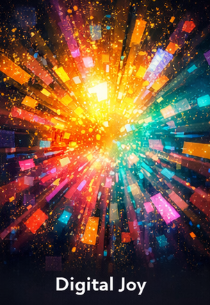
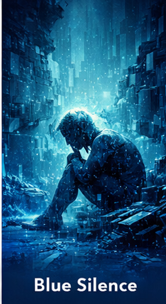
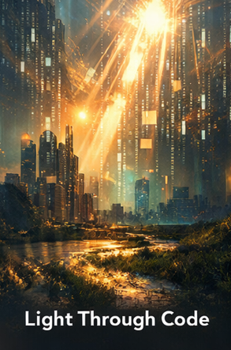
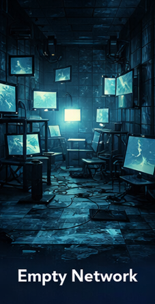

Digital Joy
This artwork represents happiness through explosive color and digital motion.
AI Tool: ChatGPT (DALL·E)

Blue Silence
A visual representation of sadness using cool tones and emotional isolation.
AI Tool: ChatGPT (DALL·E)

Red Static
Anger visualized as raw energy and intense digital distortion.
AI Tool: ChatGPT (DALL·E)

Still Mind
Calm portrayed through balance, symmetry, and peaceful design.
AI Tool: ChatGPT (DALL·E)

Watching Shadows
Fear illustrated through darkness, tension, and uncertainty.
AI Tool: ChatGPT (DALL·E)

Light Through Code
Hope represented as light breaking through a technological future.
AI Tool: ChatGPT (DALL·E)

Empty Network
Loneliness shown through abandoned digital spaces.
AI Tool: ChatGPT (DALL·E)

Synthetic Hearts
Love visualized as a deep connection between artificial beings.
AI Tool: ChatGPT (DALL·E)

Fractured Thoughts
Anxiety depicted through fractured forms and chaotic structure.
AI Tool: ChatGPT (DALL·E)

Open Skies
Freedom represented through openness and limitless space.
AI Tool: ChatGPT (DALL·E)